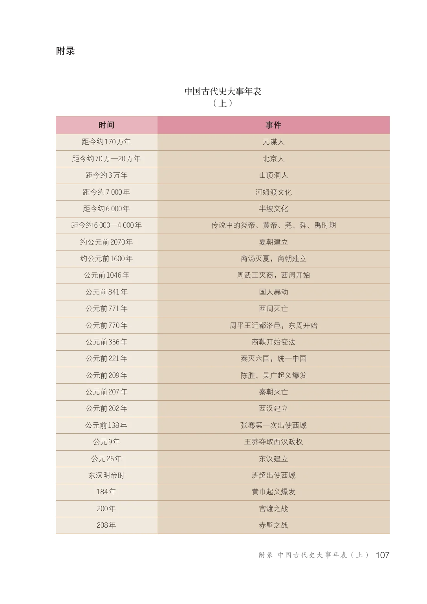
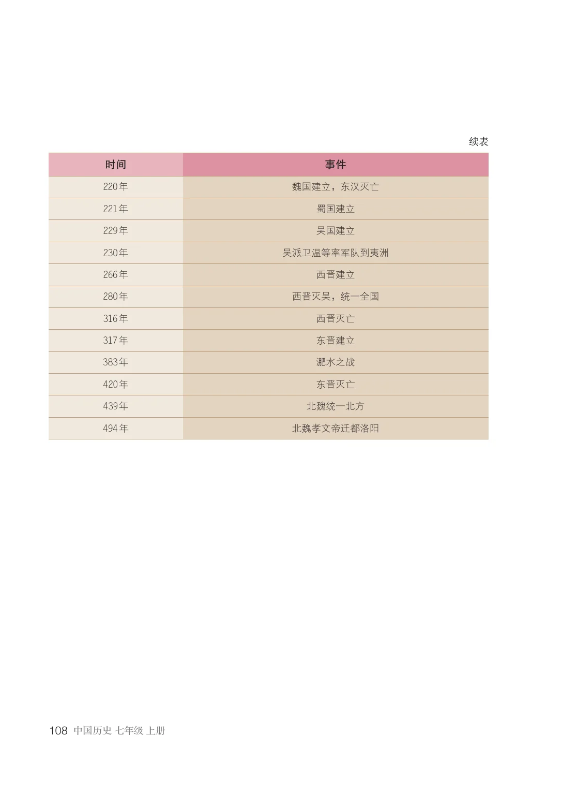
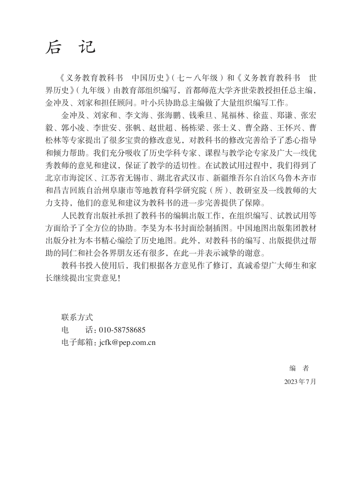

APPENDIX
中国古代史大事年表（上）
按教材附录顺序整理，完整原书页面置于页面下方。
TIMELINE
中国古代史大事年表（上）
| 时间 | 事件 |
|---|---|
| 距今约170万年 | 元谋人 |
| 距今约70万—20万年 | 北京人 |
| 距今约3万年 | 山顶洞人 |
| 距今约7 000年 | 河姆渡文化 |
| 距今约6 000年 | 半坡文化 |
| 距今约6 000—4 000年 | 传说中的炎帝、黄帝、尧、舜、禹时期 |
| 约公元前2070年 | 夏朝建立 |
| 约公元前1600年 | 商汤灭夏，商朝建立 |
| 公元前1046年 | 周武王灭商，西周开始 |
| 公元前841年 | 国人暴动 |
| 公元前771年 | 西周灭亡 |
| 公元前770年 | 周平王迁都洛邑，东周开始 |
| 公元前356年 | 商鞅开始变法 |
| 公元前221年 | 秦灭六国，统一中国 |
| 公元前209年 | 陈胜、吴广起义爆发 |
| 公元前207年 | 秦朝灭亡 |
| 公元前202年 | 西汉建立 |
| 公元前138年 | 张骞第一次出使西域 |
| 公元9年 | 王莽夺取西汉政权 |
| 公元25年 | 东汉建立 |
| 东汉明帝时 | 班超出使西域 |
| 184年 | 黄巾起义爆发 |
| 200年 | 官渡之战 |
| 208年 | 赤壁之战 |
| 220年 | 魏国建立，东汉灭亡 |
| 221年 | 蜀国建立 |
| 229年 | 吴国建立 |
| 230年 | 吴派卫温等率军队到夷洲 |
| 266年 | 西晋建立 |
| 280年 | 西晋灭吴，统一全国 |
| 316年 | 西晋灭亡 |
| 317年 | 东晋建立 |
| 383年 | 淝水之战 |
| 420年 | 东晋灭亡 |
| 439年 | 北魏统一北方 |
| 494年 | 北魏孝文帝迁都洛阳 |
AFTERWORD
后记
《义务教育教科书 中国历史》（七—八年级）和《义务教育教科书 世界历史》（九年级）由教育部组织编写，首都师范大学齐世荣教授担任总主编，金冲及、刘家和担任顾问。叶小兵协助总主编做了大量组织编写工作。
金冲及、刘家和、李文海、张海鹏、钱乘旦、晁福林、徐蓝、郑谦、张宏毅、郭小凌、李世安、张帆、赵世超、杨栋梁、张士义、曹全路、王怀兴、曹松林等专家提出了很多宝贵的修改意见，对教科书的修改完善给予了悉心指导和倾力帮助。我们充分吸收了历史学科专家、课程与教学论专家及广大一线优秀教师的意见和建议，保证了教学的适切性。在试教试用过程中，我们得到了北京市海淀区、江苏省无锡市、湖北省武汉市、新疆维吾尔自治区乌鲁木齐市和昌吉回族自治州阜康市等地教育科学研究院（所）、教研室及一线教师的大力支持，他们的意见和建议为教科书的进一步完善提供了保障。
人民教育出版社承担了教科书的编辑出版工作，在组织编写、试教试用等方面给予了全方位的协助。李旻为本书封面绘制插图。中国地图出版集团教材出版分社为本书精心编绘了历史地图。此外，对教科书的编写、出版提供过帮助的同仁和社会各界朋友还有很多，在此一并表示诚挚的谢意。
教科书投入使用后，我们根据各方意见作了修订，真诚希望广大师生和家长继续提出宝贵意见！
教材意见反馈电话：010-58758685电子邮箱：jcfk@pep.com.cn编者 · 2023年7月
SOURCE PAGES
原书页面与插图
附录及封底共 4 页。
中国古代史大事年表（上）


后记
